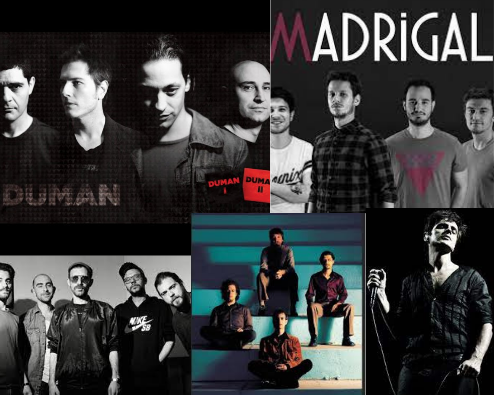
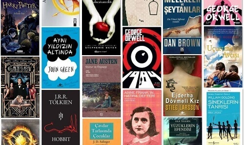

Hilal KILIÇ
19 Haziran 2000 tarihinde Tokat ‘ta doğdum.Ailemin en küçük çocuğu olarak dünyaya geldim. Ablam ve abim var. Babam polis memuru olduğu için pek çok kez tayin olduk. Bu sayede çok fazla il gezmiş oldum. Doğduktan hemen sonra Burdur'a gittik.5 yaşına geldiğimde Elazığ'a taşındık. Elazığ’da 3 sene yaşadıktan sonra Amasya’ ya tayin olduk. Amasya’da 12 sene geçirdim. Başta okul hayatım olmak üzere hayatımı şekillendiren bütün zamanları Amasya’da yaşadım.
Anaokulu ve 1. Sınıfı Elazığ’da Koç İlköğretim okulunda tamamladım. İlköğretimimi Amasya Mehmet Varinli İlköğretim okulunda, ortaöğretimimi Amasya Müftü Mehmet Tevfik Ortaokulunda, liseyi ise Amasya Anadolu Lisesinde tamamladım.Şu an Sakarya Üniversitesinde Bilgisayar Mühendisliğinde birinci sınıf olarak öğrenimime devam ediyorum.

Müzik Dinlemek
Müzik dinlemek hayatımda çok büyük bir yere sahip. Hemen hemen her türden müzik dinleyebilirim. Bütün ruh hallerimin şarkısı bile vardır. Kulaklığımı hiçbir zaman yanımdan ayırmam . Ders çalışırken, kitap okurken, okulda dersteyken vs. olabilecek her türlü ortamda ve her durumda müzik dinleyebilirim. Şu an bu yazıyı bile müzik dinleyerek yazıyorum. En sevdiğim şeylerden biri keşfedilmemiş müzik gruplarını bulmak. Onların şarkıları bana özelmiş gibi hissediyorum. En büyük hayalim gitmek istediğim bütün grupların konserlerine arkadaşlarımla gidebilmek.
Kitap Okumak
Kitap okumayı en çok geceleri severim. Hafta sonları kaç gece kitap okuyarak sabahladığımı hatırlıyorum. Kitap okuyarak hayal kurmak çok sık yaptığım bir seydir. Kendimi okuduğum kitabın kahramanının yerine koyup, onun yaşadığı şeyleri kendim yaşıyormuş gibi hayal ederim hep. Genelde fantastik kitaplar okurum. Kitap okurken genelde müzik dinlerim ve okuduğum kitapların şarkısı vardır. Merak ettiğim bütün kitapları okumayı ve çok geniş bir kitaplığımın olmasını istiyorum.

Film İzlemek
Film izlemek yıl içinde en çok yaptığım şeydir. Dizi izlemek gibi devamlı birşey olmadığı için kışın en yoğun haftalarımda bile film izlemeye vakit ayırabilirim. Her türden film izleyebilirim ama genelde yabancı fantastik , gerilim , gençlik tarzı filmler izliyorum. İlk izlediğim film Harry Potter olmuştu . Bende en çok iz bırakan bana film izlemeyi sevdiren tekrar tekrar izlediğim en sevdiğim film serilerinden biridir.
Dizi İzlemek
Dizi izlemek en çok vakit ayırdığım şey diyebilirim. Yıl içinde bulduğum bütün boşlukları dizi izleyerek geçiriyorum . Yaz tatillerimin ise tamamını günde bir sezon dizi izleyerek geçiriyorum . Her türden dizi izleyebilirim. Yabancı , Türk , fantastik ,dram, gençlik, gerilim .. Daha çok yabancı dizi izlerim ve bunun ingilizceme de büyük oranda katkısı olduğunu düşünüyorum.